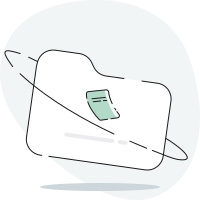

<ion-header mode="md">
  <mat-icon class="fy-modal-top-bar" svgIcon="notch"></mat-icon>
  <ion-toolbar mode="md" class="fy-modal-toolbar">
    <ion-title>
      <div class="report-list--title text-center">{{ 'fyAddToReportModal.title' | transloco }}</div>
    </ion-title>
    <ion-buttons slot="start">
      <ion-button data-testid="close_icon" (click)="onDoneClick()">
        <mat-icon class="fy-icon-close" svgIcon="cross"></mat-icon>
      </ion-button>
    </ion-buttons>
    <ion-buttons slot="end">
      <ion-button (click)="createDraftReport()">
        <ion-icon class="report-list--add-icon" src="../../../../../assets/svg/plus-square.svg"></ion-icon>
      </ion-button>
    </ion-buttons>
  </ion-toolbar>
</ion-header>

<ion-content>
  @if (options.length) {
    <div class="report-list--container">
      @if (showNullOption()) {
        <div matRipple (click)="dismissModal($event)" class="report-list--list">
          <div class="report-list--purpose report-list--none">{{ 'fyAddToReportModal.none' | transloco }}</div>
        </div>
      }
      @if (autoSubmissionReportName) {
        <div matRipple (click)="dismissModal($event)">
          <ion-grid class="ion-no-padding report-list--default-container">
            <ion-row>
              <ion-col class="ion-no-padding report-list--purpose-count-container">
                <div data-testid="auto_submit_report" class="report-list--purpose">{{ autoSubmissionReportName }}</div>
              </ion-col>
              <ion-col size="1" class="ion-no-padding report-list--selected">
                @if (!currentSelection) {
                  <ion-icon class="report-list--selected__icon" src="../../../../../assets/svg/check.svg"></ion-icon>
                }
              </ion-col>
            </ion-row>
          </ion-grid>
        </div>
      }
      @for (option of options; track option) {
        <div class="report-list--list">
          <div data-testid="reports" mat-ripple (click)="onElementSelect(option)">
            <div class="report-list--divider"></div>
            <ion-grid class="ion-no-padding">
              <ion-row>
                <ion-col class="ion-no-padding report-list--purpose-count-container">
                  <div class="report-list--purpose">{{ option.value.purpose }}</div>
                  <div class="report-list--count">
                    {{ option.value.num_expenses }}
                    {{
                      (option.value.num_expenses > 1 ? 'fyAddToReportModal.expenses' : 'fyAddToReportModal.expense')
                        | transloco
                    }}
                  </div>
                </ion-col>
                <ion-col size="3.5" class="ion-no-padding ion-text-right">
                  <div class="report-list--currency-amount-container">
                    <span class="report-list--currency">{{ reportCurrencySymbol }}</span>
                    <span class="report-list--amount">{{
                      option.value.amount || 0 | humanizeCurrency: option.value.currency : true
                    }}</span>
                  </div>
                  <div class="ion-text-right">
                    <div class="text-center report-list--state state-pill state-{{ option.value.state | reportState }}">
                      {{ option.value.state | reportState | snakeCaseToSpaceCase | titlecase }}
                    </div>
                  </div>
                </ion-col>
                @if (currentSelection || autoSubmissionReportName) {
                  <ion-col size="1" class="ion-no-padding report-list--selected">
                    @if (option.selected) {
                      <ion-icon
                        class="report-list--selected__icon"
                        src="../../../../../assets/svg/check.svg"
                      ></ion-icon>
                    }
                  </ion-col>
                }
              </ion-row>
            </ion-grid>
          </div>
        </div>
      }
    </div>
  } @else {
    <div class="report-list--zero-state">
      
      <div class="report-list--zero-state__subtitle">{{ 'fyAddToReportModal.noReports' | transloco }}</div>
      <div class="report-list--zero-state__subtitle">
        {{ 'fyAddToReportModal.createNewReport' | transloco }}
        <ion-icon
          class="report-list--zero-state__icon"
          slot="icon-only"
          src="../../../../../assets/svg/plus-square.svg"
        ></ion-icon>
      </div>
    </div>
  }
</ion-content>
